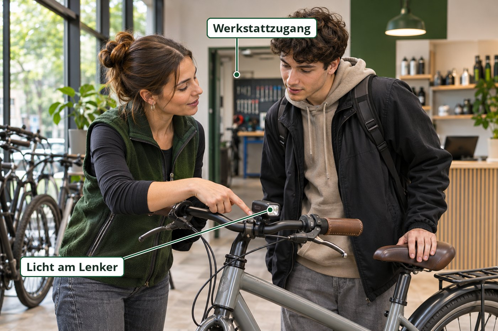
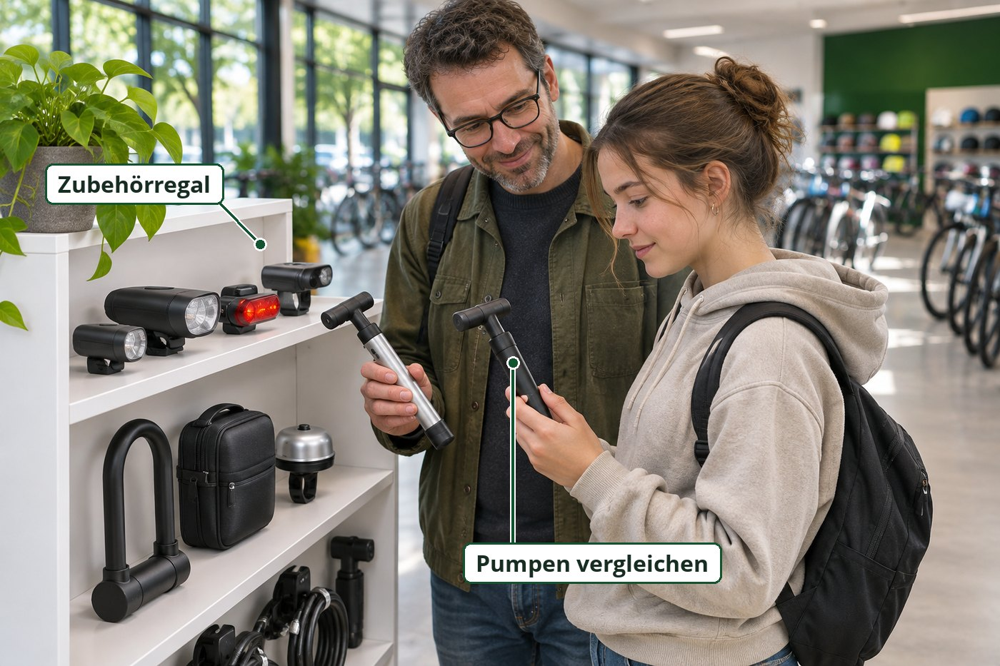

Handlungssituation · Global Bike Deutschland GmbH
Handlungssituation
Materialzugriff
Global Bike liefert Fahrradzubehör an Fachgeschäfte. Für das Frühjahr plant das Unternehmen eine Aktion mit zwei Fahrradläden in Ostfriesland. Beide wollen eine Woche lang ausgewähltes Zubehör in ihren Läden zeigen. Um 8.12 Uhr klingelt bei Global Bike das Telefon. Das 2-Rad Center Block aus Aurich ist dran. Dort lassen sich viele Menschen beraten, die mit dem Rad zur Arbeit fahren. Für die Aktion hat der Laden nur eine schmale Fläche.
Kurz darauf ruft die Bike Arena Oltmanns an, ein Fahrradgeschäft in Leer. Dort steht für die Aktion mehr Platz zur Verfügung. Am Samstag erwartet der Laden viele Familien, die eine Radtour planen. Sie sollen das Zubehör auf der Aktionsfläche selbst finden und vergleichen können.




Sarah Huber plant bei Global Bike die Werbung. Sie schlägt vor, für beide Läden dasselbe Angebot und denselben Aufbau zu planen. „So können wir die gemeinsame Aktion leichter vorbereiten.“ Sebastian Wolf betreut für Global Bike die beiden Geschäfte. Er zeigt Sarah, was die Läden über ihre Kundschaft berichtet haben. „Schau, wie die Leute dort einkaufen. Ein Aufbau kann in einem Laden gut passen. Im anderen Laden könnte er den Weg versperren oder die Auswahl erschweren.“
Um 10 Uhr kommen beide Läden zur Besprechung. Jan Richter leitet Verkauf und Marketing. Er braucht von euch einen Vergleich mit Belegen. Daraus muss er erkennen können, welche Vorgaben für jeden Laden zwingend sind. Er will auch wissen, welcher Unterschied für die Aktion am wichtigsten ist.